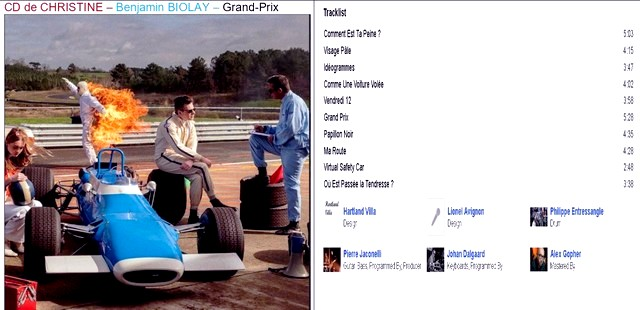

CD de Christine - Benjamin Biolay - Grand-Prix

- 01_Comment_est_ta_peine
- 02_Visage_pale
- 03_Ideogrammes
- 04_Comme_une_voiture_volee
- 05_Vendredi_12
- 06_Grand_Prix
- 07_Papillon_Noir
- 08_Ma_route
- 09_Virtual_Safety_Car
- 10_Ou est passee la tendresse
- 11_La_roue_tourne
- 12_Interlagos_(Saudade)
- 13_Souviens-toi_l_ete_dernier